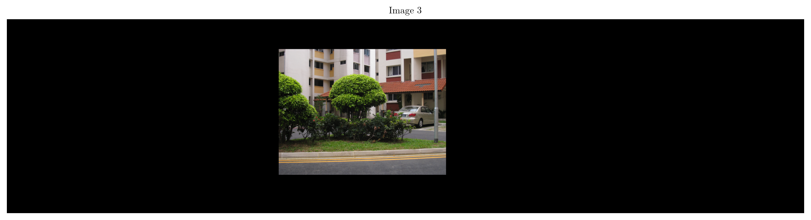
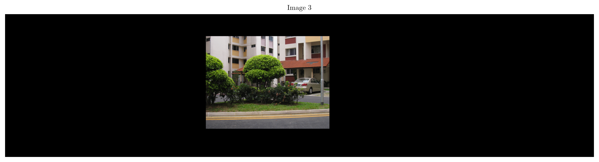

Special thanks to @Robohrriday for his immense help during various stages of execution of this assignment.
Introduction
Given a set of \(N\) images \(I_1, I_2, \ldots, I_N\) with some overlap of the actual 3-D scene, taken from a static camera with only a rotational degree of freedom, the objective is to warp and stitch the images to form a Panoramic-Stitched Image.
A Panoramic-Stitched Image.
Homography Estimation
Scale-Invariant Feature Transform (SIFT)
The SIFT algorithm [1] is one of the commonly used algorithms developed for the purpose of interest point detection and description. It detects keypoints in an image that are scale/shift-invariant and provides a 128-dimension feature description for each of the keypoints detected in an image. A variant of this algorithm is implemented in OpenCV as cv2.SIFT_create()
SIFT-detected Keypoints.
Finding the Point Correspondances
Now given the SIFT keypoints in two images, we need to find the matching keypoints in both the images i.e. to compare every 128-dimension feature vector of one image with every other feature vector of the other image to find the closest match. This is usually done with the help of some approximate KNN algorithm (KD Tree here).
A homography matrix\(H\) is a \(3 \times 3\) matrix that relates corresponding points between two images in projective space \(\mathbb{P}^2\). Given a point \(\mathbf{x} = [x, y, 1]^T\) in one image, its corresponding point \(\mathbf{x}' = [x', y', 1]^T\) in the second image can be expressed as: \[
\mathbf{x}' \sim H \mathbf{x},
\]
where \(\sim\) indicates equality up to a scale factor.
The homography matrix \(H\) has 8 degrees of freedom (DOF) hence atleast 4 point correspondances are needed (as 1 point correspondance gives 2 equations), as it has 9 entries but is defined up to a scale factor. It is generally represented as:
where one of the entries is fixed (e.g., \(h_{33} = 1\)) to remove the scale ambiguity.
The estimation of the homography matrix involves solving a linear system of equations derived from point correspondences. For a pair of corresponding points \((x, y)\) and \((x', y')\), the following two equations are obtained: \[
x' = \frac{h_{11}x + h_{12}y + h_{13}}{h_{31}x + h_{32}y + h_{33}}, \quad y' = \frac{h_{21}x + h_{22}y + h_{23}}{h_{31}x + h_{32}y + h_{33}}.
\]
Rewriting these equations in matrix form, they contribute two rows to the system \(A \mathbf{h} = 0\), where \(\mathbf{h}\) is the vectorized homography matrix. The homography is obtained by solving this system using singular value decomposition (SVD).
The provided code implements a RANSAC-based algorithm to estimate the homography matrix robustly in the presence of outliers. The steps are as follows:
Randomly select 4 point correspondences to compute a candidate homography \(H\) using the \(\texttt{compute\_homography}\) function.
Transform all points from the first image using \(H\) and compute the reprojection error with respect to the second image points.
Identify inliers as points with a reprojection error below a given threshold.
Repeat the process for a fixed number of iterations, retaining the homography with the largest number of inliers.
Recompute \(H\) using all inliers for the final estimate.
Computing Homographies of all images with respect tot the reference image.
To create a seamless panorama, the algorithm selects a reference image\(I_r\) around which all other images are aligned. The choice of the reference image depends on the total number of images \(n\): \[
r =
\begin{cases}
\frac{n}{2} - 1 & \text{if } n \text{ is even,} \\
\left\lfloor \frac{n}{2} \right\rfloor & \text{if } n \text{ is odd.}
\end{cases}
\]
For a set of images \(\{I_0, I_1, \ldots, I_{n-1}\}\), the goal is to compute the homography of every image \(I_i\) with respect to \(I_r\), denoted as \(H_{ri}\). Since non-consecutive images may not have sufficient overlap, the algorithm leverages the following principle:
Compute consecutive homographies \(H_{i, i+1}\), representing the transformation from image \(I_i\) to \(I_{i+1}\).
For images to the left of the reference, the homography \(H_{ri}\) is computed by chaining transformations: \[
H_{ri} = H_{r, r-1} H_{r-1, r-2} \cdots H_{i+1, i}.
\]
For images to the right of the reference, the homography is computed similarly: \[
H_{ri} = H_{r, r+1} H_{r+1, r+2} \cdots H_{i-1, i}.
\]
Canvas Size Calculation
Once all the homographies \(H_{ri}\) are computed, the transformed corners of each image are calculated using the homographies. Let the corners of an image \(I_i\) be represented in homogeneous coordinates as: \[
\mathbf{c}_i =
\begin{bmatrix}
0 & 0 & 1 \\
0 & h_i - 1 & 1 \\
w_i - 1 & h_i - 1 & 1 \\
w_i - 1 & 0 & 1
\end{bmatrix}^T,
\]
where \(w_i\) and \(h_i\) are the width and height of \(I_i\), respectively.
The transformed corners are given by: \[
\mathbf{c}_i' = H_{ri} \mathbf{c}_i.
\]
Since the transformed corners \(\mathbf{c}_i'\) are also in homogeneous coordinates, they are converted back to Cartesian coordinates by normalizing with the third component: \[
\mathbf{c}_i' =
\begin{bmatrix}
\frac{x'}{z'} & \frac{y'}{z'}
\end{bmatrix},
\]
where \(\mathbf{c}_i' = [x', y', z']^T\).
From the transformed corners of all images, the global bounds of the panorama are determined: \[
\texttt{min\_x} = \min_i (\mathbf{c}_i'[:, 0]), \quad
\texttt{max\_x} = \max_i (\mathbf{c}_i'[:, 0]),
\]\[
\texttt{min\_y} = \min_i (\mathbf{c}_i'[:, 1]), \quad
\texttt{max\_y} = \max_i (\mathbf{c}_i'[:, 1]).
\] The final canvas size is then computed as: \[
\texttt{width} = \texttt{max\_x} - \texttt{min\_x}, \quad
\texttt{height} = \texttt{max\_y} - \texttt{min\_y}.
\]
Image Warping and Final Stitching
To align all images within the same canvas, a shift matrix is applied to adjust for the minimum \(x\) and \(y\) coordinates: \[
S =
\begin{bmatrix}
1 & 0 & -\texttt{min\_x} \\
0 & 1 & -\texttt{min\_y} \\
0 & 0 & 1
\end{bmatrix}.
\]
Warp all images using the homographies wrt reference image.
The final homography for each image \(I_i\) with respect to the canvas is: \[
H_{i, \text{canvas}} = S H_{ri}.
\]
Each image is warped onto the canvas using OpenCV’s \(\texttt{cv2.warpPerspective}\) function, which performs inverse mapping: \[
\mathbf{p}_{\text{source}} = H_{i, \text{canvas}}^{-1} \mathbf{p}_{\text{destination}},
\]
where \(\mathbf{p}_{\text{destination}}\) represents a pixel in the canvas, and \(\mathbf{p}_{\text{source}}\) is the corresponding pixel in the original image. Since \(\mathbf{p}_{\text{source}}\) may not lie on integer coordinates, interpolation (e.g., bilinear) is used to compute pixel values.
Final Panorama Composition
The warped images are combined into a single panorama. Two strategies are used:
First-over-last blending: Images are combined in reverse order, with earlier images overwriting the later ones.
Accumulative blending: All non-zero pixel values from each warped image are combined sequentially.
Code for this simple approach:
Show the code
def panorama_stitcher(images, useOpenCV =False, first_over_last =True):""" Args: images (List): List of Images to be stitched together """assertlen(images) >=2, "Number of images should be greater than or equal to 2!"# suppose the consecutive homography matrices are H01, H12, H23, H34, H45 and the reference images is I2# we need H02, H12, H23, H24, H25 (homographies wrt to the reference image)# H02 = H01 * H12, H24 = H23 * H34, H25 = H24 * H45 homographies_wrt_reference = [None] * (len(images) -1)iflen(images) %2==0: reference_idx = (len(images) //2) -1else: reference_idx =len(images) //2print(reference_idx)# Homographies of Consecutive Images homographies = []for i inrange(1, reference_idx +1): H = estimate_homography(images[i -1], images[i], useOpenCV) homographies.append(H)for i inrange(reference_idx, len(images) -1): H = estimate_homography(images[i +1], images[i], useOpenCV) homographies.append(H)# print(homographies) homographies_wrt_reference[reference_idx] = homographies[reference_idx]if reference_idx >=1: homographies_wrt_reference[reference_idx -1] = homographies[reference_idx -1]# print(homographies_wrt_reference)for i inrange(reference_idx -2, -1, -1): homographies_wrt_reference[i] = np.dot(homographies[i], homographies_wrt_reference[i +1])for i inrange(reference_idx +1, len(images) -1): homographies_wrt_reference[i] = np.dot(homographies_wrt_reference[i -1], homographies[i])# homographies_wrt_reference = [H02, H12, H23, H24, H25] same as the indices of images by inserting a None at the reference index homographies_wrt_reference.insert(reference_idx, None)# now homographies_wrt_reference = [H02, H12, None, H23, H24, H25]# print(homographies_wrt_reference)# computing the transformed corners of all the images min_xs, max_xs, min_ys, max_ys = np.inf, -np.inf, np.inf, -np.inffor i inrange(len(images)):if i == reference_idx:continue dest_corners, min_x, min_y, max_x, max_y = transform_corners(images[i], homographies_wrt_reference[i]) min_xs =min(min_xs, min_x) max_xs =max(max_xs, max_x) min_ys =min(min_ys, min_y) max_ys =max(max_ys, max_y)print(dest_corners)print(min_x, min_y, max_x, max_y)print("=============================\n")print(max_xs, min_xs, max_ys, min_ys)# final canvas size final_canvas_width =int(max_xs - min_xs) final_canvas_height =int(max_ys - min_ys)print(f"(Width, Height) = ({final_canvas_width}, {final_canvas_height})")# now we need to shift all the images taking into account the min_x and min_y shift_matrix = np.array([[1, 0, -min_xs], [0, 1, -min_ys], [0, 0, 1]]) final_homographies_wrt_reference = []for i inrange(len(images)):if i == reference_idx: final_homographies_wrt_reference.append(shift_matrix)else: final_homographies_wrt_reference.append(np.dot(shift_matrix, homographies_wrt_reference[i])) visualize_homography_corners(images, final_homographies_wrt_reference, final_canvas_width, final_canvas_height) warped_images = []for i inrange(len(images)): warped_images.append(cv2.warpPerspective(images[i], final_homographies_wrt_reference[i], (final_canvas_width, final_canvas_height)))# plotting individual warped imagesfor i inrange(len(warped_images)): plt.figure(figsize=(15, 15)) plt.title(f"Image {i +1}") plt.imshow(cv2.cvtColor(warped_images[i], cv2.COLOR_BGR2RGB)) plt.axis('off') plt.show()if first_over_last: final_image = warped_images[-1].copy()for i inrange(len(images) -2, -1, -1): non_zero_indices = np.nonzero(warped_images[i]) final_image[non_zero_indices] = warped_images[i][non_zero_indices]else: final_image = np.zeros_like(warped_images[0])for i inrange(len(images)): non_zero_indices = np.nonzero(warped_images[i]) final_image[non_zero_indices] = warped_images[i][non_zero_indices] plt.figure(figsize=(15, 15)) plt.title("Final Image") plt.imshow(cv2.cvtColor(final_image, cv2.COLOR_BGR2RGB)) plt.axis('off') plt.show()return warped_images
But here’s the catch - this approach works just fine considering the camera is not translated. Notice the inherent digital lens problem that cause a brightness change for the side edges of the images, indicated by the crease line between the images. Further all the projections are independent of their neighbouring images and only based on the reference image, hence it may not happen that consecutive images, which had a significant overlap, will actually blend well, as seen above. And, the placing of images just above/under - clearly, overwriting the pixels of the other image, is not ideal.
The Robust Approach
Since, we have noticed the theoretically correct approach does not give seamless blend, hence we levarage the good overlap of consecutive images to enhance the blend. In this approach, we enhance the blending of consecutive images by leveraging a distance transform-based weighting. This ensures smooth transitions in overlapping regions, avoiding visible seams and artifacts. Below is the step-by-step methodology.
Weight Matrix Construction
For a single image, a 2D weight matrix is constructed based on a distance transform. The weights are higher near the center and taper off towards the edges. For an image of size \(h \times w\), the weight matrix is given by:
The way we will approach is from both sides - keeping the reference images still as the middle one.
Start in Forward Direction (Left to Right), take Image1 and Image2. Keeping Image2 as the reference, warp Image1 and translate Image2 so that they overlap.
Compute their distance transforms too and apply the same homography and shift matrices to the respective ones.
Blend the two images by adding them with their respective distance transforms.
We call this blended image as \(\texttt{Image12}\) and we will also add and normalise their combined ditance transform.
Likewise we will now take this \(\texttt{Image12}\) and \(\texttt{Image3}\), with \(\texttt{Image3}\) as the reference. Notice how we will warp the entire blended \(\texttt{Image12}\) using the Homography \(H_{23}\) between \(\texttt{Image2}\) and \(\texttt{Image3}\). Doing the same for their distance transforms too and saving the final distance transform too.
Repeat the same process but in the Backward Direction (Right to Left) and reverse order - \(\texttt{Image6}\) and \(\texttt{Image5}\)\(\to\)\(\texttt{Image65}\), and then \(\texttt{Image65}\) and \(\texttt{Image4}\)\(\to\)\(\texttt{Image654}\).
Now we need to blend these two sides - the Forward and Backward Segments - again use the Homography \(H_{34}\) i.e between \(\texttt{Image3}\) and \(\texttt{Image4}\) to warp/translate the entire blended segments \(\texttt{Image123}\) and \(\texttt{Image654}\).
Finally, we get the seamless image - clearly the ghosting effect shows that images were actually not taken from a perfect rotating camera and there was some translation introduced - further the subjects moved in the meanwhile of taking those pictures hence we simply shouldn’t overwrite one or the other.
All you now need to do is this pre-processing before our usual algorithm. Note that all panoramic set of images might not require cylindrical warping. There are ways in which OpenCV’s implementation handles the calculation of focal length (and that too estimating the pixel density since actual focal length is in mm and not pixels). For this implementation, I had heuristically figured out the focal length (although you can look at the image properties in your file manager - that might reveal the camera details that took that picture) and that too only for two set of panoramic images - rest worked just fine without it.
Final Panoramic stitching using f = 800.
Final Panoramic stitching using f = 800.
Final Results
Panorama 1.
Panorama 2 with f = 800.
Panorama 3 with f = 800.
Panorama 4.
Panorama 5.
Panorama 6.
Hope you had a great time learning and have an even time implementing it on your own!
References
[1]
D. Lowe, “Distinctive image features from scale-invariant keypoints,”International Journal of Computer Vision, vol. 60, pp. 91–, Nov. 2004, doi: 10.1023/B:VISI.0000029664.99615.94.


 
